grid-template-columns: px | % | fr | auto | repeat() | minmax() | max-content | min-content;
.容器列的划分；可以是绝对的或相对的；单位可以 混合使用
px - 静态划分
grid-template-columns: 100px 200px 300px;
% - 根据容器大小划分
grid-template-columns: 10% 70% 20%;
fr：fraction，表示份数；容器整体被分隔成多少份，子项占的份数
grid-template-columns: 1fr 2fr 1fr;
grid-template-columns: 1fr 2rem 1fr;
auto：根据子项实际大小，占用空间，其它空间由划分的大小决定
grid-template-columns: auto 1fr auto;
grid-template-columns: 1fr auto 1fr;
grid-template-columns: 2rem auto 1fr;
repeat(n, length length)：根据指定大小 length，重复应用n次；可以指定多个 length
grid-template-columns: repeat(3, 1fr);
grid-template-columns: repeat(3, 100px 200px);
如果想 自适应 划分，可以使用：auto-fill、auto-fit；其中，minmax(length, length)：格子最小和最大尺寸
.auto-fill：当容器大于子项时，生成 空轨道，剩余空间 闲置
grid-template-columns: repeat(auto-fill, minmax(50px, 1fr));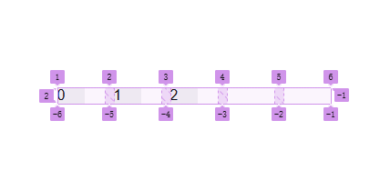
auto-fill
.auto-fit：与 auto-fill 行为一致，唯一不同的是当轨道内容为空时，将 不会生成 轨道，剩余空间被分配到各个子项中
grid-template-columns: repeat(auto-fit, minmax(50px, 1fr));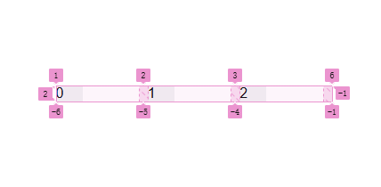
auto-fit
.max-content：每一列的宽度为其中内容的最大宽度；让列尽可能宽以适应最长的内容，保证内容不会被截断
.min-content：让列尽可能窄，仅适应最窄的内容，可能导致较多剩余空间；紧凑的列布局
grid-template-rows: px | % | fr | auto | repeat() | minmax();
.容器行的设置；含义同容器列的设置
grid-auto-rows: <length> | <percentage> | min-content | max-content | auto;
grid-auto-columns: <length> | <percentage> | min-content | max-content | auto;
.当容器中没有明确指定行列大小时，自动决定容器的行高或列宽 - 隐式的指定行的高度|列的宽度
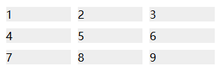
默认auto；根据内容自动占满容器

指定行大小50px；多的内容会溢出
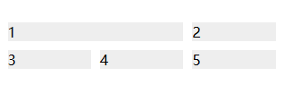指定了min-content
grid-auto-flow: row | column | dense | row dense | column dense;
.子项自动放置的顺序和方式 - 指定 工作流 的方向
.默认是按行 row 的顺序填充|行优先；逐行填充来排列，在必要时增加新行
.dense 表示密集填充还是宽松填充
.特别适合处理 动态内容，如数量或大小不一或未明确指定位置的网格项，如 瀑布流 - Grid
.通常是 划分好格子 后再指定方向；如容器划分3行3列，10个子项的排列方式

默认 row 排列 - 划分列的行优先
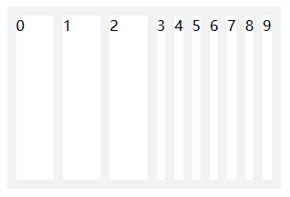column 排列 - 未划分行的列优先
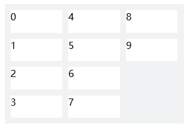column 排列 - 划分行的列优先
.按区域划分容器
.每个子项指定对应的区域
.需配合 grid-template-columns 和 grid-template-rows 指定各区域大小，便于调整宽度和合并
.也可以由子项的跨行、跨列实现。见后续案例
.子项在单元格的对齐：上中下
.默认水平垂直拉伸填满整个格子；对齐时，将使用子项的实际大小
.复合属性，同时指定 justify-items 和 align-items
默认拉伸填充
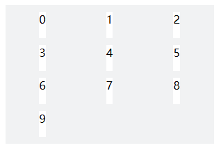水平居中
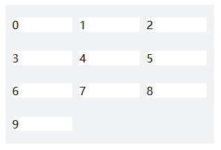垂直居中
.格子如果 没有占满 容器，有剩余空间，还需要考虑子项在容器内的分布
.复合属性，同时指定 justify-content 和 align-content
.常用属性有：normal | start | end | flex-start |flex-end | center | space-between | space-around | space-evenly |
stretch
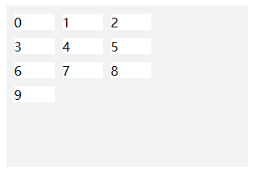
默认开始 normal/start/flex-start
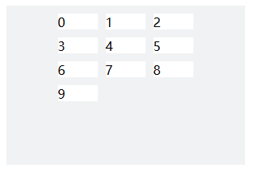水平居中 center
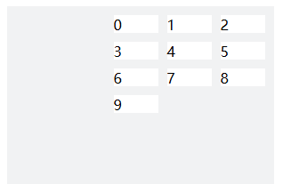水平结束 end/flex-end
justify-items 和 align-items 控制的是每个子项在其所在单元格内的对齐方式
justify-content 和 align-content 控制的是整个容器内子项的整体对齐方式
如果容器不指定高度、不指定行的划分，由子项撑开/占满，则很多容器属性都可以不考虑
.单元格间距；非常好用
.row-gap:行间距
.column-gap:列间距
.容器大小包含了 gap 的尺寸